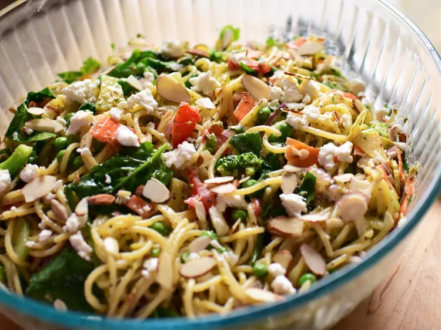

California Spaghetti Salad

Description
This is an easy pasta dish that makes use of any leftover veggies you
may have on hand. You can increase, decrease, or sub out any veggies
you wish. Some excellent additions to this recipe would be bell peppers,
mushrooms, olives, zucchini, cauliflower--the possibilities are endless!
Do be sure to allow this to chill for several hours before serving.
This allows the flavors to meld and really come together.
Ingredients
- 1 pound thin spaghetti
- 1 cup baby spinach, rinsed and dried
- 1 cup chopped broccoli
- 1 cup frozen peas
- 1 carrot, grated
- ½ red onion, thinly sliced
- ½ cucumber, peeled and thinly sliced
- 4 ounces crumbled goat cheese, or to taste
- ¼ cup toasted sliced almonds, or to taste
- salt and freshly ground black pepper to taste
Steps
- Whisk together white wine vinegar, lemon juice, Parmesan cheese,
Italian seasoning, honey, garlic, Dijon mustard, basil, salt, and pepper
in a small bowl until well combined. Gradually mix in olive oil, whisking constantly.
Set dressing aside.
- Bring a large pot of lightly salted water to a boil.
Cook spaghetti in the boiling water, stirring occasionally,
until tender yet firm to the bite, about 12 minutes.
- While spaghetti cook, prepare all the vegetables.
Combine spinach, broccoli, peas, carrot, red onion,
cucumber, and tomato in a large bowl.
-
Drain pasta, and add to the bowl with the vegetables.
Toss pasta and veggies together. Pour dressing over pasta
and veggies and toss until thoroughly combined.
Add in goat cheese and almonds and toss again to combine.
-
Cover pasta, and chill in the fridge for at least 3 hours to overnight.
Taste pasta salad, and season with more salt and pepper, if necessary.